Giver
Fein- und grobkörniger blauer Granit mit rotem Korn
Höhe: 102 cm
Breite: 118 cm
Größte Dicke: 35 cm
Runenhöhe: 10,5 / 13 / 16 cm
Runeninschrift :
Kale errichtete diesen Stein für Thorsten, seinen Vater, ein sehr wohlgeborener Thegn

36 - Giver - Letztes Update 24.08.2025
Listennummer : DR 130 / DK NJy 65
| Navidaten: 56.82914 9.58230 oder: Skivumvej 112, 9600 Aars |
Transliteration: kali : sati : stin | þąnsi : ift : þursin | faþur : sia : ha(þ)|a : kuþąn : þign :
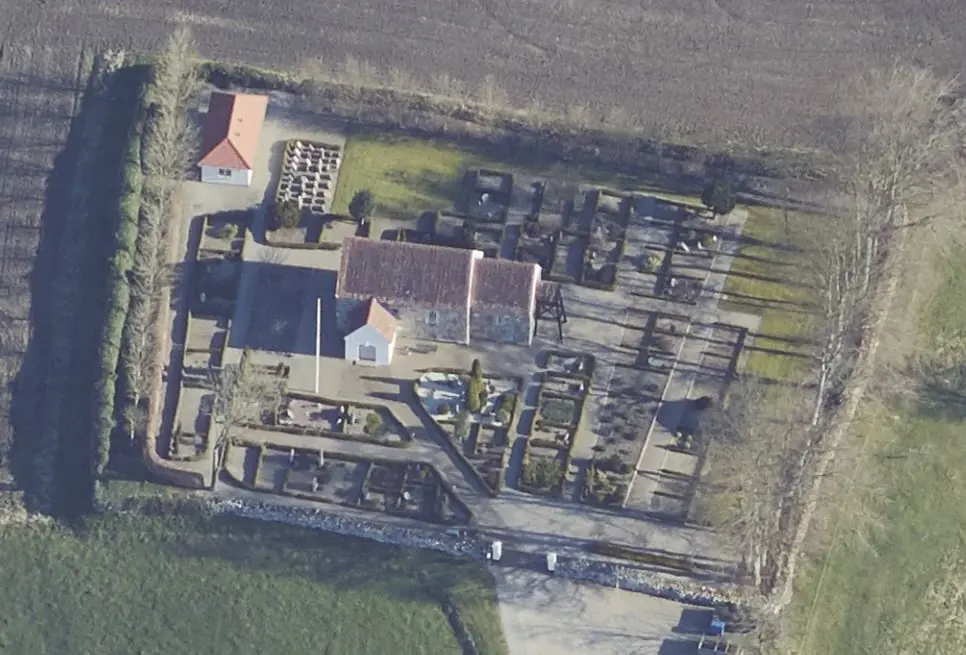
Das ist ein Luftfoto vom 20.04.2023 von Skråfoto - Lizenz: CC BY 4.0 - das die Kirche von Giver zeigt. Skråfoto ist eine Webanwendung, die von Klimadatastyrelsen weltweit kostenlos bereitgestellt wird. Die Aufnahmen werden seit 2017 alle zwei Jahre erneuert und neben einer Senkrechtaufnahme wird ein Schrägbild aus jeder Himmelsrichtung angeboten, das man über eine Adresssuche aufrufen kann.
Jahrelang war der Runenstein rechts vom Eingang der Kirche von Giver, auf der linken Seite liegend, im Freien aufgestellt. Zunehmend wurde er von direkt davor gesetzten Pflanzen verdeckt - siehe Foto Roberto Fortuna unten - und bei normaler Betrachtung waren die flachen Runenzeichen kaum mehr erkennbar. Nun findet er sich nach seiner Restaurierung - seit dem 04.10.2015 - innerhalb der Kirche auf einem kleinen Sockel wieder. Die dünnen und nicht sehr tiefen Runenzeichen wurde durch Nachzeichnen mit weißer Farbe deutlich gemacht. Wie ich finde, ist diese Form der Restaurierung sehr gut gelungen und könnte als Vorbild für viele andere Runensteine - deren Inschrift / Verzierung ebenfalls kaum mehr erkennbar ist (z.B. Sjelle) - dienen.
Auf der Steinrückseite - die aufgrund der Aufstellung direkt mit dem Rücken zur Westwand hin nicht sichtbar sind - finden sich sogenannte Schalenzeichen, die etwa 2000 Jahre älter als die Runeninschrift sein dürften - Foto der Rückseite bei www.biopix-foto.de.
Der Runenstein wird in die Zeit von 970 bis 1020 n. Chr. datiert. Die über insgesamt vier Zeilen verlaufende Inschrift liest sich als Bustrophedon (wechselnde Schreib-/Leserichtung) von rechts nach links. In der rechten unteren Ecke geht es nach oben, in der zweiten Linie nach unten, in der dritten wieder nach oben und in der vierten Linie nun nach unten zum Ende.
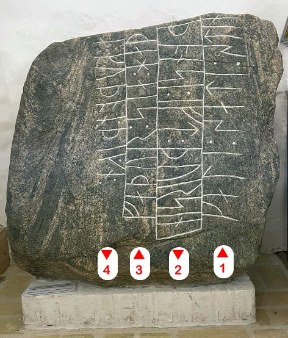
Die abseits der Gemeinde im freien Feld gelegene Kirche von Giver habe ich erstmals im Sommer 1988 - vor nunmehr 34 Jahren - besucht. Danach war ich nochmals am Dienstag, 21.08.1990, vor Ort. Nach der Restaurierung und Umsetzung wollte ich mir den Runenstein am Samstag, 04.06.2022, anschauen. Da ich leider auf eine verschlossene Kirche traf, habe ich über eine E-Mail nachgefragt. Darüber war es mir möglich am Dienstag, 14.06.2022, nochmals, diesmal bei geöffneten Türen, vorbeizuschauen. Dabei konnte ich diese digitalen Fotos anfertigen.
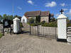 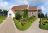 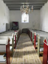 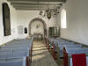 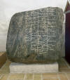 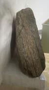 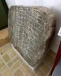 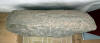


Bei der Ausführung von Reparaturarbeiten innerhalb der Kirche von Giver wurde der Runenstein im Jahre 1895 von einem Arbeiter entdeckt. Er lag als Schwelle unter der nördlichen, zugemauerten Tür, zur Hälfte unter dem Sockel. Daraufhin wurde er sofort herausgeholt und im Waffenhaus aufgestellt. Carl Nicolai Henry Petersen (*20.03.1849 - 21.09.1896, dänischer Archäologe, 1879 im Nationalmuseum angestellt, ab 1892 als Leiter der Mittelalterabteilung - link-LIVES)
 Bildquelle:
Wikipedia - Lizenz:
Public Domain
Bildquelle:
Wikipedia - Lizenz:
Public Domain
berichtet gegenüber Prof. Ludv. F. A. Wimmer (*07.02.1839 - 29.04.1920, Philologe und Runenforscher - link-LIVES - Politiets registerblade - Bestattungsprotokoll)
 Bildquelle:
Fotografie zw. 1877-1900 von Fotograf Hansen & Weller
-
Det Kgl. Biblioteks billedsamling - Lizenz:
Public Domain
Bildquelle:
Fotografie zw. 1877-1900 von Fotograf Hansen & Weller
-
Det Kgl. Biblioteks billedsamling - Lizenz:
Public Domain
in zwei Notizen, am 07.09.1895 und nochmals am 18.10.1895 - am Tag nachdem Prof. Julius Magnus Petersen (*04.09.1827 - 31.01.1917, Archäologischer Zeichner und Restaurator - link-LIVES - Bestattungsprotokoll) vor Ort war und die u.a. Zeichnung angefertigt hatte - über den neu entdeckten Runenstein.
 Bildquelle: Fotografie
von 1903 von Fotograf Marius Christensen
(*24.06.1874 -
25.06.1907) -
Det Kgl. Biblioteks billedsamling - Lizenz:
Public Domain
Bildquelle: Fotografie
von 1903 von Fotograf Marius Christensen
(*24.06.1874 -
25.06.1907) -
Det Kgl. Biblioteks billedsamling - Lizenz:
Public Domain
Diese frühesten Aufzeichnungen haben sich in der Collectio Runologica Wimmeriana (S. 64) - im Nachlass von Prof. Ludv. F. A. Wimmer bewahrt - siehe auch unten - wo ich sie bei meinem Besuch am Montag, 26.09.2022, fotografieren durfte.


Ludv. F. A. Wimmer (*07.02.1839 - 29.04.1920, Philologe und Runenforscher), berichtet in "De danske runemindesmærker undersøgte og tolkede af Ludv. F. A. Wimmer, Andet Bind, Runestenene i Jylland og på øerne. 1899-1901, Nr. 51, S. 239" über den Runenstein. Wimmer hat den Runenstein persönlich vor Ort am 02. August 1896 untersucht. Er nimmt an, dass die Steinoberfläche vor Anbringung der Runen geglättet wurde. Er führt weiter aus, dass es wohl auch in neuerer Zeit zu vereinzelten Steinablösungen kam, worüber einige Runenzeichen beschädigt und schwierig lesbar wurden - eigener Scan.
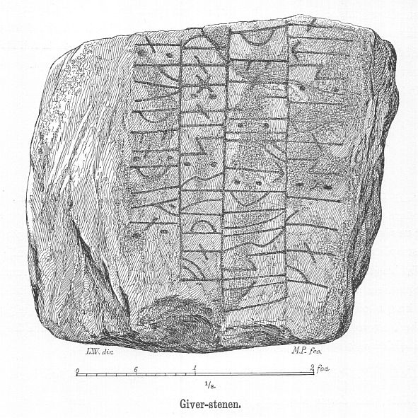
Ludv. F. A. Wimmer hat seine jahrelangen Aufzeichnungen der "Kgl. Bibliotek" in Kopenhagen überlassen. Ein Verzeichnis darüber wurde 1915 in Buchform herausgegeben - "Collectio runologica Wimmeriana: Fortegnelse over Ludv. F. A. Wimmers runologiske o. a. Samlinger i Det kgl. Bibliotek"
In seinen Unterlagen in der Königlichen Bibliothek findet sich unter "III - Originaltegninger af de danske Runemindesmærker, udførte paa Undersøgelsesrejserne af Magn. Petersen og kontrollerede paa Stedet af Ludv. Wimmer, samt Prøvetryk af de paa Grundlag af de nævnte Tegninger, Aftryk o. s. v. til De danske Runemindesmærker" udførte Afbildninger med Wimmers Rettelser" unter der Nummer 62 eine Zeichnung von Magnus Petersen, die er auf den 17.10.1895 datiert hat und die von Wimmer mit Bleistiftanmerkungen vom 02.08.1896 überarbeitet wurde.


Durch Erik Moltke (*04.04.1901 - 19.10.1984, Runologe, Historiker - link-LIVES)
 Bildquelle: Scan von Buchumschlag "Runerne i Danmark og ders
oprindelse" - Erik Moltke - 1976 - Lizenz:
CC-BY-SA
Bildquelle: Scan von Buchumschlag "Runerne i Danmark og ders
oprindelse" - Erik Moltke - 1976 - Lizenz:
CC-BY-SA
wurde diese sw Fotografie des Runensteins am 12.05.1931 aufgenommen.
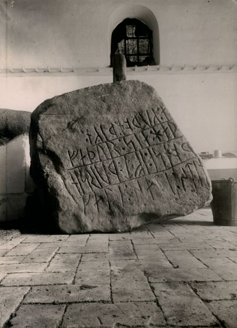
Quelle: Digitale Sammlung des Nationalmuseums in Kopenhagen - Lizenz: CC-BY-SA
In "Fund og Fortidsminder" findet sich für 1961 der Hinweis, dass im Lexikon "Trap V" auf der S. 1166 dieser Eintrag steht: "En runesten blev i 1895 fundet som tærskel under kirkens tilmurede n.dør; den opstilledes derefter i våbenhuset men er nu overført til museet i Års. Indskriften lyder: Kale satte denne sten efter sin fader Thorsten, en meget velbyrdig thegn. Bagsiden er dækket med skålgruber - übersetzt: "1895 wurde ein Runenstein als Schwelle unter der zugemauerten Nordtür der Kirche gefunden; Damals wurde er in der Waffenkammer aufgestellt, jetzt aber in das Museum in Års überführt. Die Inschrift lautet: Kale setzte diesen Stein nach seinem Vater Thorsten, einem sehr wohlhabenden Thegn. Die Rückseite ist mit Schalengruben bedeckt."
In dem Register "Fund og Fortidsminder" steht weiter zum Jahr 1972 dann dieser Hinweis (übersetzt): "Einem Zeitungsbericht von Løgstør Avis vom 16. Nov. 1972 zufolge haben sich der Gemeinderat von Giver und das Vesthimmerlands Museum in Aars darauf geeinigt, den Runenstein zurück in die Kirche von Giver zu bringen. Der Runenstein war im Keller des Museums gelagert worden."
Im Vorfeld zu dem 2016 erschienenen Buch von Lisbeth M. Imer (*1973, Runologin am Nationalmuseum Kopenhagen) "Danmarks Runesten - en fortælling" reiste sie mit dem Fotografen Roberto Fortuna zur Bestandsaufnahme durch die Lande. Dieser hat die Runensteine mit Schräglicht aufgenommen und darüber wirklich herausragende Fotos erzielt. Diese Fotografie stammt vom 08.12.2015. Zuvor hatte er am 22.10.2012 noch das rechte Foto des Runensteins im Kirchhof, neben dem Waffenhaus / Eingang, angefertigt.
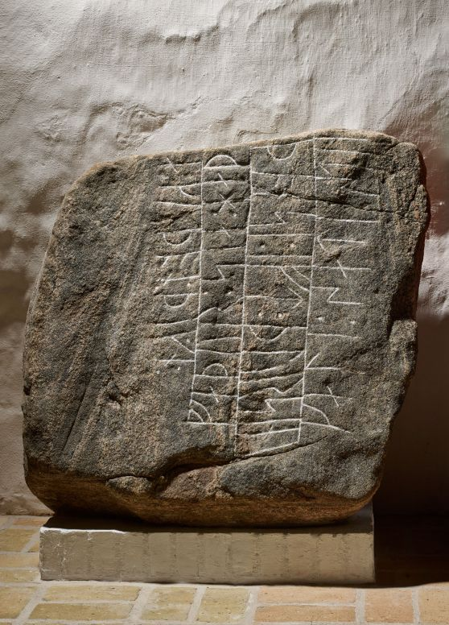
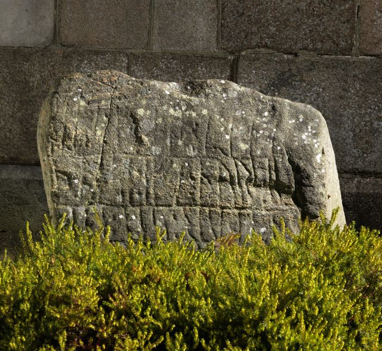
Quelle: Digitale Sammlung des Nationalmuseums in Kopenhagen - Digitale Sammlung des Nationalmuseums in Kopenhagen - Lizenz jeweils: CC-BY-SA
Den Eintrag zu diesem Runenstein aus der dänischen Runen Datenbank im Internet kann man hier abrufen.
Die Informationen in "Fund og Fortidsminder" zu dem Runenstein finden sich hier. Darin ist inzwischen dieser Zustandsbericht des Steinrestaurators Leif Vognsen aus dem Jahr 2018 eingebettet.
Über diesen Link finden sich zu dem Runenstein Informationen des Forschungsprojektes "Runes" der Akademie der Wissenschaften zu Göttingen.
Über die Webseite www.biopix-foto.de kann man sich dieses Foto des Runensteins anschauen, bei dem die Runen mit roter Farbe nachgezeichnet und darüber die Lesbarkeit deutlich erhöht wurde, wa sich allerdings durch die Restaurierung / Ausmalung der Runen inzwischen erübrigt hat.